the testing department.
Every dog on this wall is testing the products in the real world and reporting back. Eleven positions are filled. Nine are open. We are a small department with high standards and no salary. The kit is free; the dogs are unbribable.
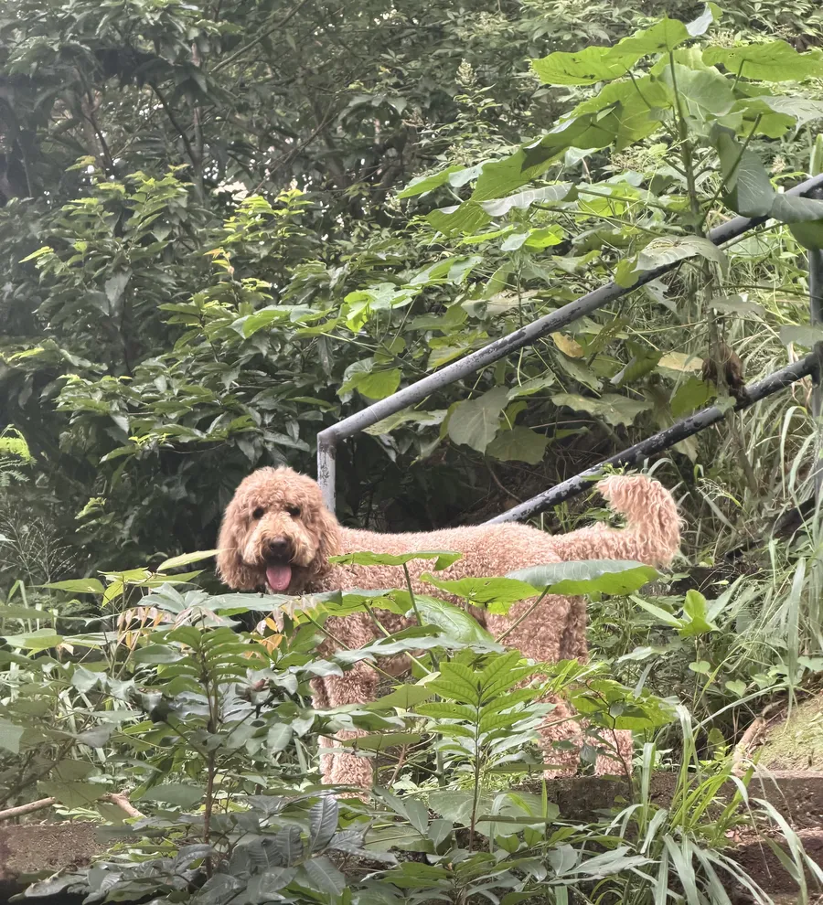
currently on staff.
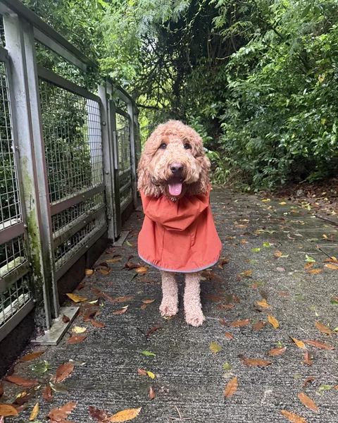
no. 001Apricot goldendoodle. Founding member. Has tested every product on this site and approved none of them enthusiastically.
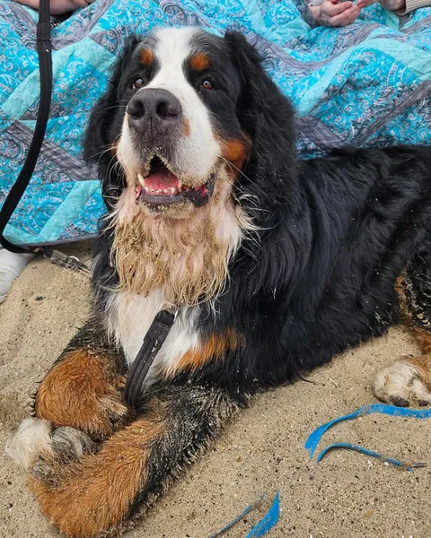
no. 002Bernese mountain dog. Assistance dog on duty. Off the clock he rolls, runs through bushes, and wears eau de fox.
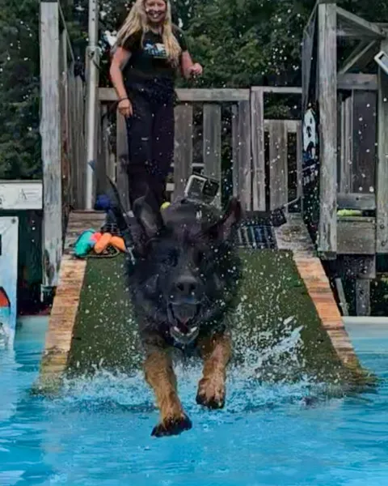
no. 003Double coat. Paddles, hikes, camps, skijors, and is learning to dock dive. Washed after every plunge.
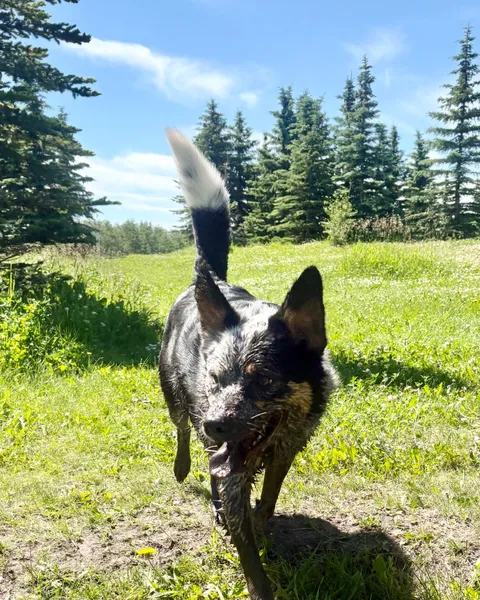
no. 004Double coat, farm-based. Trails, ponds, the dog park, and the farm itself, daily.
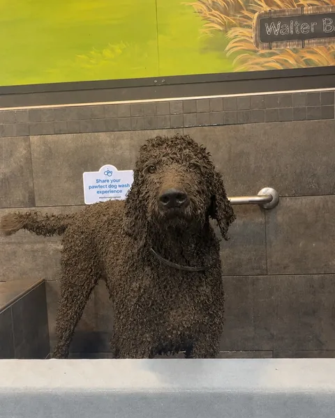
no. 005All-black, long and curly. Lives on a farm surrounded by wetlands and uses every one of them.
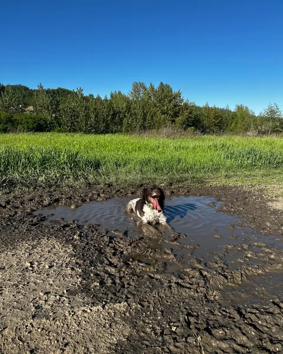
no. 006Medium coat. If there is water, she is in it. Collects sticks and hitchhikers as a hobby.
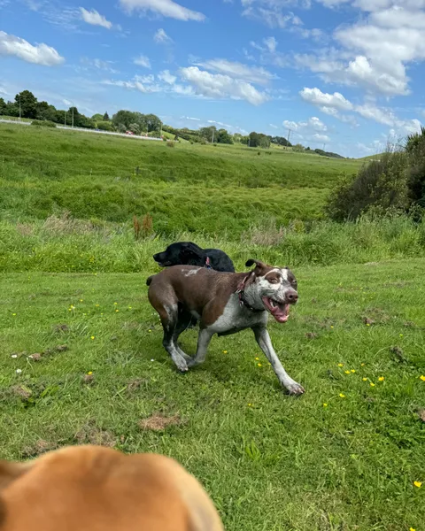
no. 007Short coat. Rivers, lakes, beaches, and every mud puddle between them.
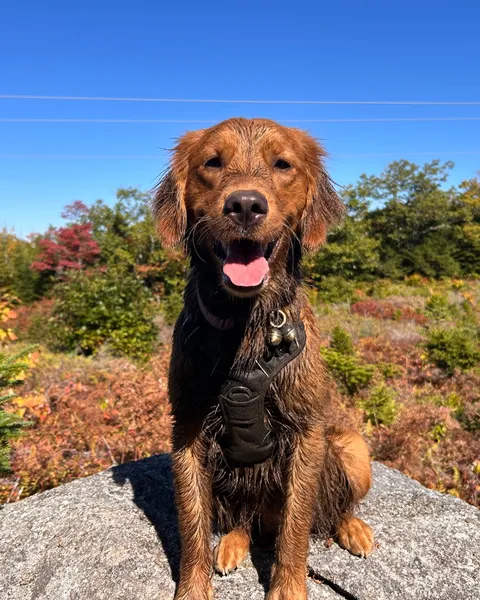
no. 008Golden retriever. Lakes, oceans, swamps and mud pits, followed by a commemorative roll in each.
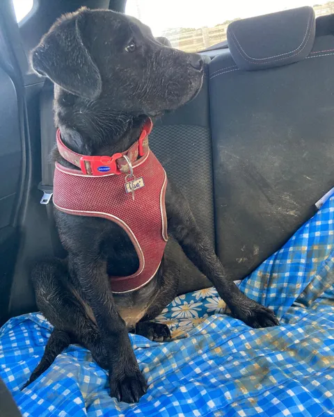
no. 009Double coat. Creek specialist. Smells like the creek on the walk home, reliably.
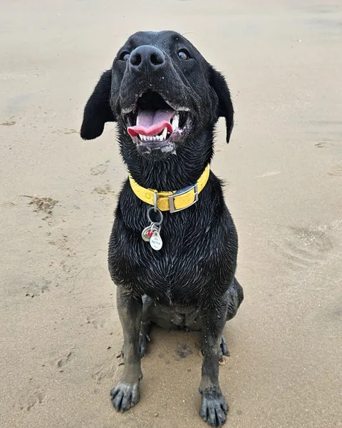
no. 010Labrador. Can smell water a mile off and considers baths a personal insult. Our ideal customer.
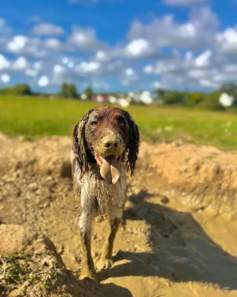
no. 011Working spaniel. Basically wet or muddy at all times. Reports filed from bogs.
Eight further positions unlisted. The wall fills as the intake does.
think your dog is dirty enough?
The kit free before launch, founder pricing locked after, and a place on this wall.